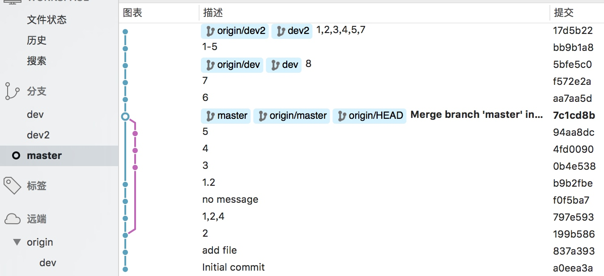

有时候会遇到这种情况，对一个项目开了不同的几个分支，在开发的时候应该是要在A上开发的，结果跑到了B上面去，提交合并的时候也没看到，结果就郁闷了，各种混乱，回滚，代码没了。修改后再合并，会影响到对应的分支，最好就是针对某几次的提交，合并的特定的分支上。这个是可以实现的。
做了如下的实验

master上输入1，2，3，4，5
dev上1，2，3，4，5，6，7，8
master上要实现1，2，3，4，5，7这样的功能，也就是要把dev上的7这次提交合并到master上。我是这么做的
首先通过master再拉一个分支dev2（也可以不用拉），然后找到7的这次提交“f572e2a”，运行如下命令：git cherry-pick f572e2a，如果有冲突，解决冲突后即可。
合并某个分支上的一系列commits
在一些特性情况下，合并单个commit并不够，你需要合并一系列相连的commits。这种情况下就不要选择cherry-pick了，rebase 更适合。还以上例为例，假设你需要合并feature分支的commit aa7aa5d ~5bfe5c0 到master分支。
首先需要基于feature创建一个新的分支，并指明新分支的最后一个commit：git checkout -bnewbranch 5bfe5c0
然后，rebase这个新分支的commit到master（--ontomaster）。aa7aa5d^ 指明你想从哪个特定的commit开始。git rebase --ontomaster aa7aa5d^
得到的结果就是feature分支的commit aa7aa5d ~5bfe5c0 都被合并到了master分支。